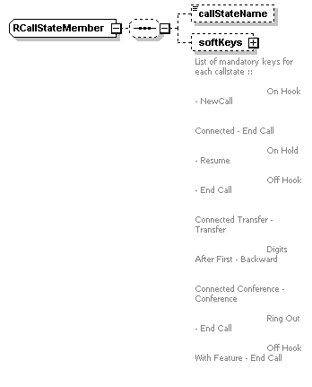
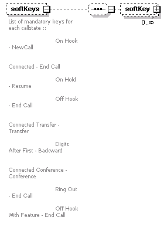
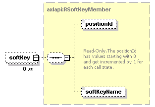

| diagram |  | ||
| namespace | http://www.cisco.com/AXL/API/10.5 | ||
| children | callStateName softKeys | ||
| used by |
|
||
| source | <xsd:complexType name="RCallStateMember"> <xsd:sequence minOccurs="0"> <xsd:element name="callStateName" type="xsd:string" nillable="true" minOccurs="0"/> <xsd:element name="softKeys" minOccurs="0"> <xsd:annotation> <xsd:documentation>List of mandatory keys for each callstate :: On Hook - NewCall Connected - End Call On Hold - Resume Off Hook - End Call Connected Transfer - Transfer Digits After First - Backward Connected Conference - Conference Ring Out - End Call Off Hook With Feature - End Call </xsd:documentation> </xsd:annotation> <xsd:complexType> <xsd:sequence minOccurs="0"> <xsd:element name="softKey" type="axlapi:RSoftKeyMember" minOccurs="0" maxOccurs="unbounded"/> </xsd:sequence> </xsd:complexType> </xsd:element> </xsd:sequence> </xsd:complexType> |
| diagram | |||||||||
| type | xsd:string | ||||||||
| properties |
|
||||||||
| source | <xsd:element name="callStateName" type="xsd:string" nillable="true" minOccurs="0"/> |
| diagram |  | ||||||
| properties |
|
||||||
| children | softKey | ||||||
| annotation |
|
||||||
| source | <xsd:element name="softKeys" minOccurs="0"> <xsd:annotation> <xsd:documentation>List of mandatory keys for each callstate :: On Hook - NewCall Connected - End Call On Hold - Resume Off Hook - End Call Connected Transfer - Transfer Digits After First - Backward Connected Conference - Conference Ring Out - End Call Off Hook With Feature - End Call </xsd:documentation> </xsd:annotation> <xsd:complexType> <xsd:sequence minOccurs="0"> <xsd:element name="softKey" type="axlapi:RSoftKeyMember" minOccurs="0" maxOccurs="unbounded"/> </xsd:sequence> </xsd:complexType> </xsd:element> |
| diagram |  | ||||||
| type | axlapi:RSoftKeyMember | ||||||
| properties |
|
||||||
| children | positionId softKeyName | ||||||
| source | <xsd:element name="softKey" type="axlapi:RSoftKeyMember" minOccurs="0" maxOccurs="unbounded"/> |